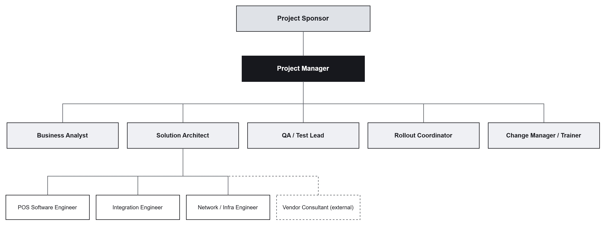
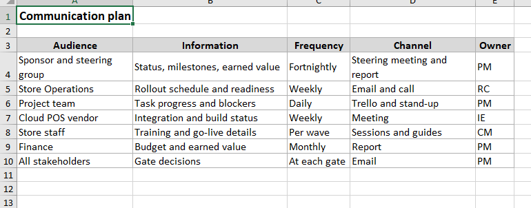

Section 7 of 9
Team and Communication
Section owner: Subodh Lamichhame
This section shows the team structure and how information flows.
Team and resource structure

Image slot: images/dio_org_chart.pngRoles are matched to the phases they lead, so accountability is clear.
Communication plan

Image slot: images/xl_comms_plan.png